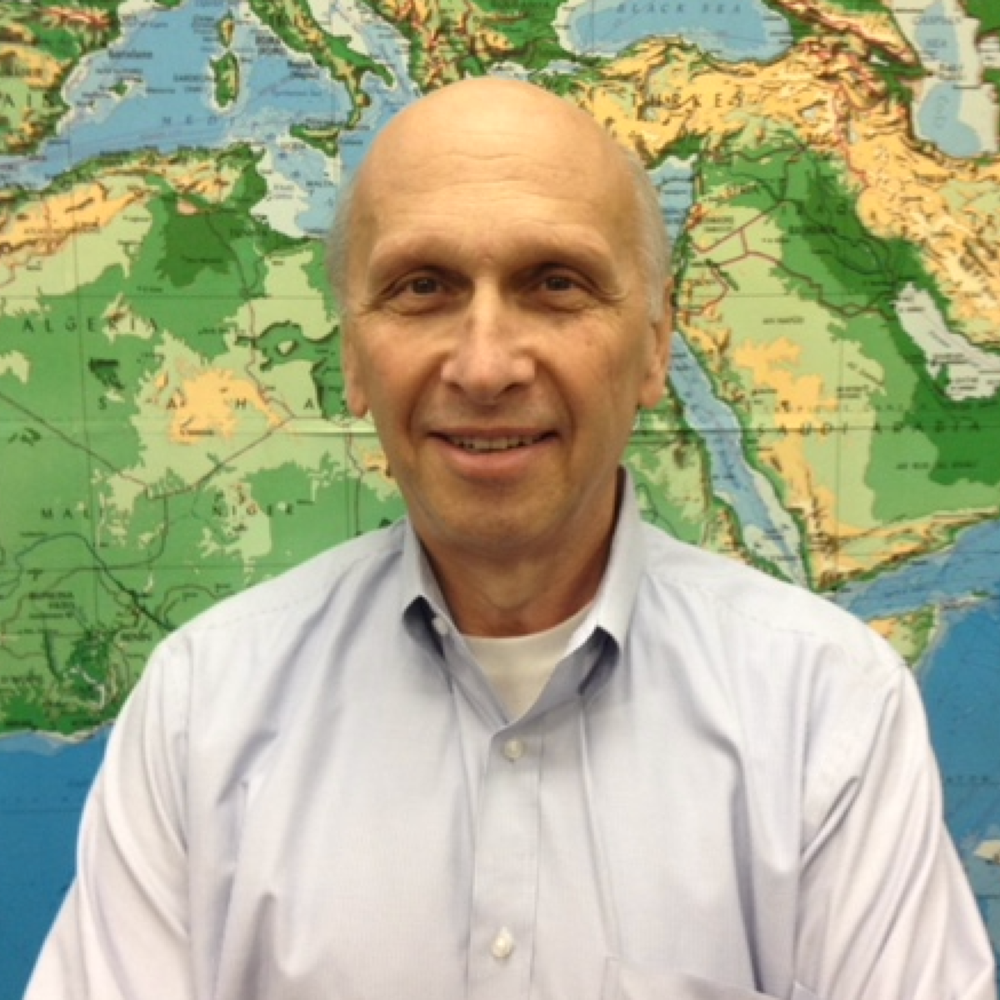

<!doctype html>
<html lang="en">
  <head>
    <link rel="stylesheet" href="https://stackpath.bootstrapcdn.com/bootstrap/4.1.1/css/bootstrap.min.css"
	  integrity="sha384-WskhaSGFgHYWDcbwN70/dfYBj47jz9qbsMId/iRN3ewGhXQFZCSftd1LZCfmhktB" crossorigin="anonymous">
    <title>EarthScope-Oceans</title>
  </head>
  <body>

    <!-- Optional JavaScript -->
    <!-- jQuery first, then Popper.js, then Boot strap JS -->
    <script src="https://code.jquery.com/jquery-3.3.1.slim.min.js"
	    integrity="sha384-q8i/X+965DzO0rT7abK41JStQIAqVgRVzpbzo5smXKp4YfRvH+8abtTE1Pi6jizo"
	    crossorigin="anonymous"></script>
    <script src="https://cdnjs.cloudflare.com/ajax/libs/popper.js/1.14.3/umd/popper.min.js"
	    integrity="sha384-ZMP7rVo3mIykV+2+9J3UJ46jBk0WLaUAdn689aCwoqbBJiSnjAK/l8WvCWPIPm49"
	    crossorigin="anonymous"></script>
    <script src="https://stackpath.bootstrapcdn.com/bootstrap/4.1.1/js/bootstrap.min.js"
	    integrity="sha384-smHYKdLADwkXOn1EmN1qk/HfnUcbVRZyYmZ4qpPea6sjB/pTJ0euyQp0Mk8ck+5T"
	    crossorigin="anonymous"></script>
    <script src="../scripts/BioPopup.js"></script>
  </body>
</html>

<html lang="en">
  <head>
    <link rel='shortcut icon' href='../images/eso1.jpg'/>
    <link rel='apple-touch-icon' href='../images/eso1.jpg'/>

    <!-- Bootstrap CSS -->
    <link rel="stylesheet" href="https://stackpath.bootstrapcdn.com/bootstrap/4.1.1/css/bootstrap.min.css"
	  integrity="sha384-WskhaSGFgHYWDcbwN70/dfYBj47jz9qbsMId/iRN3ewGhXQFZCSftd1LZCfmhktB" crossorigin="anonymous">

    <meta charset="utf-8">
    <meta name="viewport" content="width=device-width, initial-scale=1, shrink-to-fit=no">
    <meta name="description" content="">
    <meta name="author" content="">
    <link rel="icon" href="../images/eso1.jpg">

    <!-- Custom styles for this template -->
    <link rel="stylesheet" href="../aux/style.css">
    <link rel="stylesheet" href="../aux/popup.css">
    <link rel="stylesheet" href="../aux/button.css">

    <!-- Favicon -->
    <link rel='shortcut icon' href='../images/eso1.jpg'/>
    <link rel='apple-touch-icon' href='../images/eso1.jpg'/>

  </head>

  <body>

    <!-- #################### START NAVBAR ################## -->
    <nav class="navbar navbar-inverse navbar-expand-md navbar-dark fixed-top ">
      <a class="navbar-brand" href="../index.html">
	
      </a>
      <button class="navbar-toggler" type="button" data-toggle="collapse" data-target="#navbarsExampleDefault" aria-controls="navbarsExampleDefault" aria-expanded="false" aria-label="Toggle navigation">
	<span class="navbar-toggler-icon"></span>
      </button>

      <div class="collapse navbar-collapse" id="navbarsExampleDefault">
	<ul class="navbar-nav mr-auto">
	  <li class="nav-item">
	    <a class="nav-link" href="../index.html">Home</a>
	  </li>

	  <li class="nav-item dropdown">
	    <a class="nav-link dropdown-toggle" href="" id="dropdown01" data-toggle="dropdown" aria-haspopup="true" aria-expanded="false">People</a>
	    <div class="dropdown-menu" aria-labelledby="dropdown01">
	      <a class="dropdown-item" href="http://www.frederik.net">Frederik J. Simons</a>
	      <a class="dropdown-item" href="https://faculty.sustech.edu.cn/johnyc/en/">Yongshun John Chen</a>
	      <a class="dropdown-item" href="http://www.jamstec.go.jp/souran/html/Masayuki_Obayashi_8d9ac-e.html">Masayuki Obayashi</a>
	      <a class="dropdown-item" href="https://www.earth.ox.ac.uk/people/karin-sigloch/">Karin Sigloch</a>
	      <a class="dropdown-item" href="https://geoazur.oca.eu/fr/yann-hello">Yann Hello</a>
	      <a class="dropdown-item" href="https://www.iris.edu/hq/staff/employee/ahern">Tim Ahern</a>
	      <a class="dropdown-item" href="http://eost.unistra.fr/recherche/institut-de-physique-du-globe-de-strasbourg/sismologie/pages-personnelles/alessia-maggi/">Alessia Maggi</a>
	      <a class="dropdown-item" href="http://www.planet.sci.kobe-u.ac.jp/marine/sugioka_e.html">Hiroko Sugioka</a>
	      <a class="dropdown-item" href="https://www.cmcc.it/people/gualtieri-lucia">Lucia Gualtieri</a>
	    </div>
	  </li>

	  <li class="nav-item dropdown">
	    <a class="nav-link dropdown-toggle" href="" id="dropdown02" data-toggle="dropdown" aria-haspopup="true" aria-expanded="false">Institutions</a>
	    <div class="dropdown-menu" aria-labelledby="dropdown01">
	      <a class="dropdown-item" href="https://geoazur.oca.eu">G&eacute;oazur | Nice</a>
	      <a class="dropdown-item" href="https://www.princeton.edu">Princeton | NJ</a>
	      <a class="dropdown-item" href="https://www.jamstec.go.jp/e/">JAMSTEC | Tokyo</a>
	      <a class="dropdown-item" href="http://www.sustc.edu.cn/en/">SUSTC | Shenzhen</a>
	      <a class="dropdown-item" href="http://eost.unistra.fr">EOST | Strasbourg</a>
	      <a class="dropdown-item" href="http://www.stanford.edu">Stanford | CA</a>
	    </div>
	  </li>

	  <li class="nav-item dropdown active">
	    <a class="nav-link dropdown-toggle" href="" id="dropdown03" data-toggle="dropdown" aria-haspopup="true" aria-expanded="false">Committees</a>
	    <div class="dropdown-menu" aria-labelledby="dropdown01">
	      <a class="dropdown-item" href="steeringcommittee.html">STEERING</a>
	      <a class="dropdown-item" href="technicalcommittee.html">TECHNICAL</a>
	      <a class="dropdown-item" href="datacommittee.html">DATA<span class="sr-only">(current)</span></a>
	      <a class="dropdown-item" href="sciencecommittee.html">SCIENCE</a>
	    </div>
	  </li>

	  <li class="nav-item">
	    <a class="nav-link" href="../meetings/meetings.html">Meetings</a>
	  </li>

	  <li class="nav-item dropdown">
	    <a class="nav-link dropdown-toggle" href="" id="dropdown04" data-toggle="dropdown" aria-haspopup="true" aria-expanded="false">Deployments</a>
	    <div class="dropdown-menu" aria-labelledby="dropdown01">
	      <a class="dropdown-item" href="../deployments/SouthChinaSea2023.html">South China Sea 2023</a>
              <a class="dropdown-item" href="../deployments/NorthwestPacific2023.html">Northwest Pacific 2023</a>
	      <a class="dropdown-item" href="../deployments/Mediterranean2021.html">Mediterranean 2021</a>
	      <a class="dropdown-item" href="../deployments/SouthChinaSea2021.html">South China Sea 2021</a>
	      <a class="dropdown-item" href="../deployments/SouthPacific2019.html">South Pacific 2019</a>
	      <a class="dropdown-item" href="../deployments/Polynesia2018.html">Polynesia 2018</a>
	      <a class="dropdown-item" href="../deployments/Tahiti2018.html">Tahiti 2018</a>
	      <a class="dropdown-item" href="../deployments/NewCaledonia2018.html">New Caledonia 2018</a>
	      <a class="dropdown-item" href="../deployments/Wallis2018.html">Wallis 2018</a>
	      <a class="dropdown-item" href="../deployments/Kobe2018.html">Kobe 2018</a>
	    </div>
	  </li>

	  <li class="nav-item">
	    <a class="nav-link" href="../data/metadata.html">Data</a>
	  </li>

	  <li class="nav-item dropdown">
	    <a class="nav-link dropdown-toggle" href="" id="dropdown05" data-toggle="dropdown" aria-haspopup="true" aria-expanded="false">Press</a>
	    <div class="dropdown-menu" aria-labelledby="dropdown01">
              <a class="dropdown-item" href="http://geoweb.princeton.edu/people/simons/PDF/reprints/AT-2021.pdf">Acoustics Today 2021</a>
              <a class="dropdown-item" href="https://www.scienceandthesea.org/program/mermaids">Science and the Sea 2020</a>
              <a class="dropdown-item" href="http://doi.org/10.1126/science.aax7339">Science 2019</a>
	      <a class="dropdown-item" href="http://doi.org/10.1063/PT.6.1.20190524a">Physics Today 2019</a>
	      <a class="dropdown-item" href="https://www.forbes.com/sites/robinandrews/2019/02/06/mermaids-spy-huge-umbrella-shaped-heat-source-beneath-the-galapagos/?sh=7599d2933539">Forbes 2019</a>
	      <a class="dropdown-item" href="https://www.princeton.edu/news/2019/02/04/mermaids-reveal-secrets-below-ocean-floor">PU Homepage 2019</a>
	      <a class="dropdown-item" href="https://www.princeton.edu/news/2016/06/20/catching-seismic-wave-simons-measures-earthquakes-oceans">PU Homepage 2016</a>
	      <a class="dropdown-item" href="http://www.fondriest.com/news/son-o-mermaid-holds-promise-tracking-oceanic-earthquakes.htm">Environmental Monitor 2016</a>
	      <a class="dropdown-item" href="http://doi.org/10.1126/science.349.6252.1033">Science 2015</a>
	      <a class="dropdown-item" href="http://doi.org/10.1038/507151a">Nature 2014</a>
	      <a class="dropdown-item" href="https://www.nbcnews.com/id/wbna44945612">NBC News 2011</a>
              <a class="dropdown-item" href="http://doi.org/10.1038/news.2011.583">Nature 2011</a>
              <a class="dropdown-item" href="http://geoweb.princeton.edu/people/simons/PDF/reprints/NERC-2009.pdf">Planet Earth 2009</a>
	      <a class="dropdown-item" href="https://www.princeton.edu/news/2008/01/28/geoscientist-simons-earths-deepest-secrets-may-come-sea">PU Homepage 2008</a>
	      <a class="dropdown-item" href="http://www.economist.com/node/10640660">The Economist 2008</a>
	      <a class="dropdown-item" href="http://www.ucl.ac.uk/news/news-articles/0606/06062701">UCL Homepage 2006</a>
	    </div>
	  </li>

	  <li class="nav-item dropdown">
	    <a class="nav-link dropdown-toggle" href="" id="dropdown06" data-toggle="dropdown" aria-haspopup="true" aria-expanded="false">Papers</a>
	    <div class="dropdown-menu" aria-labelledby="dropdown01">
              <a class="dropdown-item" href="http://doi.org/10.1007/s11430-022-1100-3">SCES 2023</a>
              <a class="dropdown-item" href="http://geoweb.princeton.edu/people/simons/PDF/reprints/GJI-2022b.pdf">GJI 2022b</a>
              <a class="dropdown-item" href="http://geoweb.princeton.edu/people/simons/PDF/reprints/GJI-2022a.pdf">GJI 2022a</a>
	      <a class="dropdown-item" href="http://geoweb.princeton.edu/people/simons/PDF/reprints/SRL-2021a.pdf">SRL 2021</a>
              <a class="dropdown-item" href="http://geoweb.princeton.edu/people/simons/PDF/reprints/BSSA-2020.pdf">BSSA 2020</a>
              <a class="dropdown-item" href="http://geoweb.princeton.edu/people/simons/PDF/reprints/SREP-2019.pdf">SREP 2019</a>
              <a class="dropdown-item" href="https://doi.org/10.1785/0220160121">SRL 2017</a>
              <a class="dropdown-item" href="https://doi.org/10.1785/0220150111">SRL 2016</a>
              <a class="dropdown-item" href="https://doi.org/10.1785/0120140265">BSSA 2015 </a>
              <a class="dropdown-item" href="http://geoweb.princeton.edu/people/simons/PDF/reprints/NatCom-2015.pdf">NCOM 2015</a>
              <a class="dropdown-item" href="https://doi.org/10.1029/2011EO400001">EOS 2011</a>
              <a class="dropdown-item" href="http://geoweb.princeton.edu/people/simons/PDF/reprints/GRL-2011.pdf">GRL 2011</a>
              <a class="dropdown-item" href="http://geoweb.princeton.edu/people/simons/BIB/Simons+2009-JGR.html">JGR 2009</a>
              <a class="dropdown-item" href="http://geoweb.princeton.edu/people/simons/BIB/Simons+2006-EOS.html">EOS 2006</a>
	    </div>
	  </li>

	  <li class="nav-item">
	    <a class="nav-link" href="../adoptafloat.html">Adopt-A-Float</a>
	  </li>

	</ul>
      </div>
    </nav>
    <!-- #################### END NAVBAR ################## -->

    <main role="main">

      <!-- START Main jumbotron for a primary homepage -->
      <div class="jumbotron">
	<div class="container">
	  <h1 class="display-3 title" style="font-size: calc(10px + 4vw);">
	    <b>STANDING COMMITTEE ON<br><i>DATA</i></b>
	  </h1>
	</div>
      </div>
      <!-- END Main jumbotron for a primary homepage -->

      <div class="container">
	<!-- Example row of columns -->
	<div class="row about-earthscope">
	  <p>
	    <a class="textcss" href="mailto:eso-datacomm@princeton.edu">Members</a>
	  </p>
	</div>
	<hr>

      </div> <!-- /container -->

      <div class="album py-5 bg-light">
	<div class="container">
	  <div class="card-group">
	    <!-- <div class="card"> -->
            <!--   <div class="card-body"> -->
	    <!-- 	<h5 class="card-title"></h5> -->
	    <!-- 	<p class="card-text"></p> -->
            <!--   </div> -->
	    <!-- </div> -->
	    <div class="card">
	      
              <div class="card-body">
		<h5 class="card-title"><a href="https://www.iris.edu/hq/staff/employee/ahern">Tim Ahern</a></h5>
                <p class="card-text"><a href="https://www.iris.edu">IRIS</a> (Emeritus)</p>
		<div class="popup" onclick="myFunction('TimBio')"><button class="bioButton">Bio</button>
		  <div class="popuptext" id="TimBio">
		    <p>
		    Dr. Tim Ahern was the Director of Data Services for the
		    Incorporated Research Institutions for Seismology (IRIS) for
		    32 years. IRIS is an NSF funded not-for-profit corporation
		    that supports the global research infrastructure in
		    seismology. He retired in 2019 but continues as Director of
		    Data Services, Emeritus.<br>

		    He earned a BS degree in Physics at Whitworth University and
		    a M.Sc. and Ph.D. in Geophysics at the University of British
		    Columbia.  Following his graduate work he joined the staff
		    of Standard Oil of Indiana’s Amoco Production Company’s
		    Research Center as a Senior Research Scientist.  His
		    research focused on the development of real time marine
		    seismic processing systems for use in oil exploration. In
		    1987 he began his career with IRIS where he led the
		    development of the IRIS Data Management Center the primary
		    node in IRIS’ Data Services directorate.<br>

		    He served as the Secretary of the International Federation
		    of Digital Seismograph Networks (FDSN), a commission of
		    IASPEI for 12 years and also acted as the chair of several
		    working groups within the FDSN. He was active for many years
		    with international efforts in seismology related to
		    standards development and coordinating international
		    efforts.<br>

		    Since retiring, Dr. Ahern has remained active in several
		    national and international projects including the
		    development of school seismometer networks, the development
		    of metadata standards for legacy seismic data, serves on the
		    Scientific Program Committee of the Comprehensive Test Ban
		    Treaty Science and Technology Conferences, and serves as the
		    chair of the Standing Committee on Data within
		    EarthScope-Oceans.<br>
		    </p>
		  </div>
		</div>
		<br>
		<a href="mailto:Tim-ahern@comcast.net">Email</a> 
              </div>
	    </div>
	    <div class="card">
              
              <div class="card-body">
		<h5 class="card-title"><a href="https://geosciences.princeton.edu/people/joel-d-simon">Joel Simon</a></h5>
                <p class="card-text"><a href="http://www.princeton.edu">Princeton University</a></p>
		<div class="popup" onclick="myFunction('JoelBio')"><button class="bioButton">Bio</button>
		  <div class="popuptext" id="JoelBio">
		    <p>
		      Joel D Simon is a Postdoctoral Researcher in the
		      Department of Geosciences at Princeton University, where
		      he also received his PhD in Geophysics in 2020. He is a
		      member of the Standing Committee on Data for the
		      international consortium EarthScope-Oceans which oversees
		      a drifting array of fifty MERMAID floats. His research
		      pairs hydroacoustics with global seismology to address
		      questions concerning the structure of the Earth, and he is
		      particularly interested in signal processing techniques
		      useful to extract signals from noisy time series.
                    </p>
		  </div>
		</div>
		<br>
		<a href="mailto:jdsimon@alumni.princeton.edu">Email</a>
              </div>
	    </div>
	    <div class="card">
              
              <div class="card-body">
		<h5 class="card-title"><a href="">Christoph Waldmann</a></h5>
                <p class="card-text"><a href="https://www.marum.de/en/Dr.-christoph-waldmann.html">MARUM</a></p>
		<div class="popup" onclick="myFunction('ChristophBio')"><button class="bioButton">Bio</button>
		  <div class="popuptext" id="ChristophBio">
		    <p>
     		      During his professional career Dr. Christoph Waldmann has
		      built up an expertise in ocean technology and data
		      management. He has worked as a group leader at the Center
		      for Marine Environmental in Bremen, Germany, for over 25
		      years. MARUM is the first and only Research Faculty at the
		      University of Bremen and home to the Cluster of
		      Excellence <i>The Ocean Floor – Earth's Uncharted
		      Interface</i> as well as other national and international
		      research projects like IODP.<br>

		      He earned an Intermediate Diploma degree in Physics at
		      Ludwig-Maximilians-Universit&auml;t, Munich, and a Diploma
		      and Ph.D. in Applied Physics at the University of Kiel,
		      Germany, in 1985. After a time as a DFG Postdoc Fellow
		      which allowed him to work as a guest investigator at the
		      Woods Hole Oceanographic Institution, Mass., in 1987 he
		      started working at the Alfred-Wegener-Institute for Polar
		      Research. His research focused on the development and
		      assessment of ocean density measurement methods. In 1996
		      he began his career with MARUM where he led the
		      development of autonomous operating underwater platforms
		      for long-term deployments.<br>

		      Waldmann has been a member of the IEEE Oceanic Engineering
		      Society since 1986 and is now serving as the Chair of the
		      OES Standing Committee on Standards. Since 2018 he has
		      served as a Member of the Advisory Board of the NOAA/IOOS
		      program QARTOD. He is also a member of the WMO Expert Team
		      on Measurement Uncertainties and was involved in a number
		      of international projects that aimed at standards
		      development and coordination of international efforts.<br>
                    </p>
		  </div>
		</div>
		<br>
		<a href="mailto:waldmann@marum.de">Email</a>
              </div>
	    </div>
	    <div class="card">
              
              <div class="card-body">
		<h5 class="card-title"><a href="https://www.eq-igl.ac.cn">Yong Yu 于勇</a></h5>
                <p class="card-text"><a href="https://www.cea-igp.ac.cn">Institute of Geology, China Earthquake Administration</a></p>
		<div class="popup" onclick="myFunction('YongBio')"><button class="bioButton">Bio</button>
		  <div class="popuptext" id="YongBio">
		    <p>
		      Yong Yu is an Associate Professor at the Institute of
		      Geology, China Earthquake Administration. He earned his
		      Ph.D. in Geophysics in 2016 under the guidance of
		      Professor Yongshun John Chen at Peking University. Prior
		      to his current position, he served as a Postdoctoral
		      Fellow and Assistant Research Professor at the Southern
		      University of Science and Technology (SUSTech) in
		      Shenzhen, China. He played a significant role in the
		      deployment of MERMAID floats and has been responsible for
		      the management and processing of MERMAID float data at
		      SUSTech ever since. His research primarily focuses on the
		      detection of deep Earth structure and tectonic conditions
		      using seismic methods.
                    </p>
		  </div>
		</div>
		<br>
		<a href="mailto:yuyong@pku.edu.cn">Email</a>
              </div>
	    </div>
          </div>
  	</div>
       </div>
     </div>
    </div>

      <!-- ########## BEGIN LOGO JUMBOTRON ##########-->
      <div class="navbar navbar-light bg-white logo-jumbotron">
	
	
	
      </div>
      <!-- ########## END LOGO JUMBOTRON ##########-->

    </main>

    <div class="jumbotron copyright-jumbotron">
      <footer class="container copyright">
	<p>Copyright ©2023 Frederik J Simons | Jonah N Rubin | Stefan Kildal-Brandt</p>
      </footer>
    </div>

    <!-- Bootstrap core JavaScript ================================ -->
    <!-- Placed at the end of the document so the pages load faster -->
    <script src="https://code.jquery.com/jquery-3.3.1.slim.min.js"
	    integrity="sha384-q8i/X+965DzO0rT7abK41JStQIAqVgRVzpbzo5smXKp4YfRvH+8abtTE1Pi6jizo"
	    crossorigin="anonymous"></script>
  </body>
</html>
